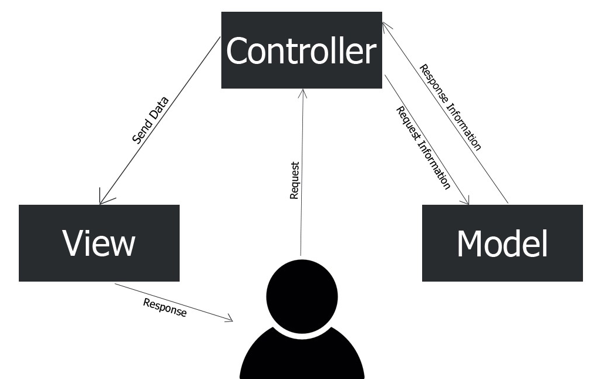

MVC
Model-View-Controller o Modelo-Vista-Controlador es un modelo de arquitectura que separa los datos y la lógica de negocio respecto a la interfaz de usuario y el componente encargado de gestionar los eventos y las comunicaciones.
Al separar los componentes en elementos conceptuales permite reutilizar el código y mejorar su organización y mantenimiento. Sus elementos son:
- Modelo: representa la información y gestiona todos los accesos a ésta, tanto consultas como actualizaciones provenientes, normalmente, de una base de datos. Se accede vía el controlador.
- Vista: Presenta al usuario de forma visual el modelo y los datos preparados por el controlador. El usuario interactúa con la vista y realiza nuevas peticiones al controlador.
- Controlador: Responde a las acciones del usuario, y realiza peticiones al modelo para solicitar información. Tras recibir la respuesta del modelo, le envía los datos a la vista.

Nota
En las ofertas de trabajo cuando hacen referencia a un Full-stack developer, están buscando un perfil que domina tanto el front-end como el back-end.